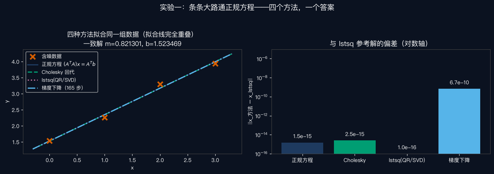
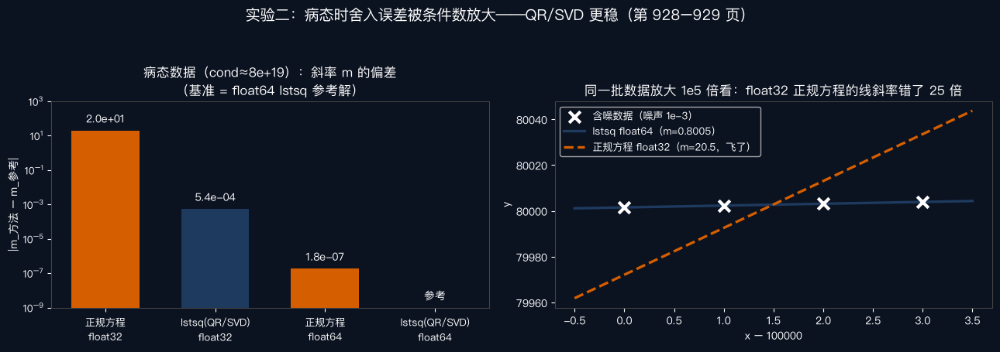

数学工具箱 · 04
矩阵求导与最小二乘：
一行抵万行
把上一集的两条偏导方程，升级成一条正规方程 —— 解法、陷阱与实验，附录 A.2 一次到位
开场 · PERVASIVE
从两个参数，到成千上万个
原书附录 A.2 开篇第一句：最小二乘拟合问题，在计算机视觉里无处不在（第 927 页）。
上一集的直线拟合只有 2 个参数；真实问题动辄上千个变量一起估计——逐个写偏导不现实，必须矩阵化。
矩阵化 · DESIGN MATRIX
四个点，摞成一个矩阵
每个数据点的 \(x_i\) 和 1 打包成一行；n 个点摞成设计矩阵 A。观测值立成一列 b，参数 \((m,b)\) 立成一列 x。
边界 · LINEAR IN PARAMETERS
线性的是参数，不是函数
原书第 927 页原话：函数本身不必是线性的，只要求它对未知参数线性（linear in the unknown parameters）。
多项式拟合 ✓
$$y = a_0 + a_1 x + a_2 x^2 + a_3 x^3$$
各次幂是已知输入列，系数 \(a_j\) 线性——原书式 A.26
正弦拟合 ✓
$$A\sin(2\pi f x + \phi) = B\sin 2\pi f x + C\cos 2\pi f x$$
频率 f 已知时，对 (B, C) 线性——原书式 A.27
讲者的判定口诀：模型是已知积木的加权组合 → 归正规方程管；频率藏在参数里 → 等非线性方法。
灵魂时刻 ① · EXPAND
平方展开，碗就现形
讲者的类比：标量的 \(x^2\)，进矩阵世界 = \(x^TCx\)。盯住两个新面孔：AᵀA 是 2×2 对称方阵，Aᵀb 是向量——旧问题被包成一个新碗。
灵魂时刻 ② · SET TO ZERO
梯度为零，一行定案
与上一集那两条手算偏导方程完全等价——矩阵记号把 m 方程和 b 方程压缩成了一行。
解法 ① · CHOLESKY
对称正定，开个平方根
讲者纪律：永远别求逆；相对 LU 约快一倍——讲者补充。
解法 ② · QR
跳过 AᵀA，直接分解 A
讲者推导：QᵀQ = I ⇒ AᵀA = RᵀR。
原书第 929 页：更稳、慢一个常数因子。
实验 · CODE
四个方法，一个答案
四个含噪数据点，真斜率 0.8、截距 1.5。同台：正规方程、乔列斯基、lstsq（SVD）、梯度下降。
梯度下降：步长 = 0.85 × 2/λmax(AᵀA)——按 ½E 写误差时海森就是 AᵀA。

实验 · 病态
数据平移十万：灾难现场

处方 · PP.928–929
病态不是绝症
原书处方：病态一般应当避免——加足够的正则化或参数先验（附录 A.3）；或绕开 AᵀA，直接对 A 用 QR / SVD。
讲者再补一招：中心化（x 减均值）——cond 从 8×10¹⁹ 降到 1.25；挪回原点立刻回 14。病的是坐标系。
「
一行抵万行：AᵀA·x = Aᵀb。
碗的曲率，乘上参数，等于数据推来的力。
—— 本集记忆锚 ｜ 讲者的两条纪律：解正规方程用分解、别求逆；矩阵病了，先中心化、再 QR
NEXT · 回书指路
读原书附录 A.2（主体第 927–929 页：式 A.23–A.34）→ 病态处方第 928–929 页 → 有余力看 A.2.1 全最小二乘（第 929 页起）
作业把 code/normal_equations_demo.py 的 X_CROWD_SHIFT 改成 1e6，重跑看条件数与斜率偏差怎么变——双精度还撑得住吗？
下一集E005 概率速通